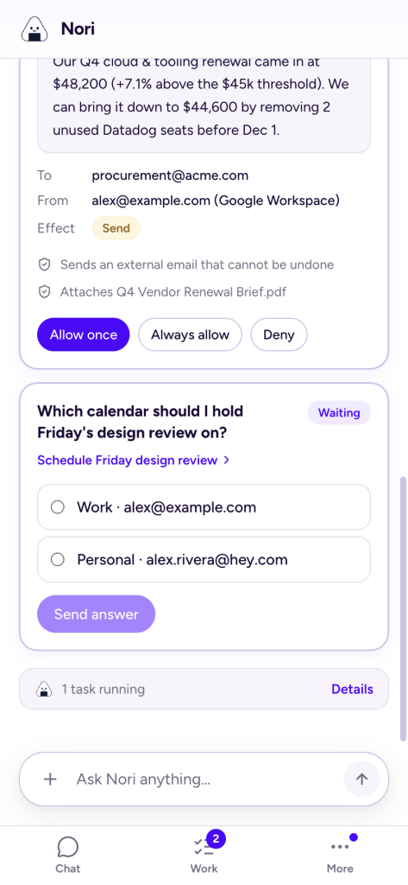

Production users reach Nori embedded inside host app; this workbench exercises the same Go service locally during development.
A slim Next.js UI for locally exercising Nori's persistent thread, background tasks, approval cards, MCP servers, automations and saved library.
Production users reach Nori embedded inside host app; this workbench exercises the same Go service locally during development.
Shared contracts and the host app integration are on The host app and clients and Service API.
| Part | What it shows | Component |
|---|---|---|
| Header & shell | Nori's mark and status, navigation across Chat, Work, Library, Memory, Automations, Goals, Apps and Settings (debug toggle lives in SettingsScreen). | AppShell |
| Thread | Saved messages, documents, time separators, older-message loading and one status line. | Thread |
| Composer | A text box, Attach for up to 10 files, Send and a new-message count. | RuntimeComposer |
| Activity panel | Live task status, steers, durable questions and Stop controls, toggled from ChatScreen via ⌘. or Ctrl+.. Typed approval cards and budget-limit Continue actions render in Work. | TaskPanel (approvals: WorkScreen, InteractionCard) |
| Reading view | Full-screen view of a saved reply or result, with Download as Markdown and Back to chat. | DocumentViewer |


| Header status | When |
|---|---|
| Connecting… | The first session request is loading. |
| Reconnecting… | The SSE stream failed repeatedly and is backing off to reconnect. |
| Disconnected | A request failed or there is no session. Send stays disabled until a first session loads. |
| N thing(s) need(s) you | One or more tasks have an open question or pending approval interaction. |
| Working… | A message, turn, task or command is in progress. |
| Ready when you are | Nothing is in progress. |
| Task label | Task state | Controls |
|---|---|---|
| Working on your task / Running a long job | Running | Stop task, Send task update |
| Waiting for your answer | Running with an input question | Answer question, Stop task, Send task update |
| Asking for separate work | Running with a work request | Answer question, Stop task, Send task update |
| Answer accepted, Waiting for its subtasks | Running, and the question or subtask dispatch is resolved | Stop task, Send task update |
| Stopping…, Stopping owned work…, Finishing and cleaning up…, Cleanup pending | Winding down or cleaning up after Stop or completion | None until the agent service confirms |
| Completed, Incomplete, Failed, Stopped | Finished (typed approval cards and budget-stopped Continue actions live in Work) | Continue in WorkScreen (when budget-stopped) |
The thread status line also indicates when task execution is paused. Sending a steer while an approval is pending supersedes that approval card. See Permissions and approvals.
The client picks the layout from each saved reply's text part. User messages are always bubbles.
| Width | Layout |
|---|---|
| 1280 px and up | The Activity panel docks beside the thread at 360 px. |
| Below 1280 px | The Activity panel opens as a sheet from the right, over a scrim. |
| 900 px and below | The lavender margin shrinks from 28 px to 16 px. |
| 600 px and below | The window fills the screen and the Activity button shows only its icon. |
web/src/components/runtime/NoriApp.tsx · web/src/components/runtime/TaskPanel.tsx · web/src/components/assistant/AppShell.tsx · web/src/components/assistant/InteractionCard.tsx · web/src/lib/hybrid.ts · web/src/lib/units.ts